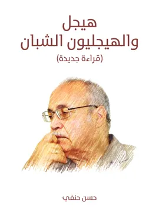

هيجل والهيجليون الشبان: (قراءة جديدة)

قراءة عربية أصلية محددة النطاق في الصفحات 9، 10 من ملف PDF المرتبط، وليست تلخيصا كاملا للكتاب. نناقش ما تدعمه هذه المقاطع فقط.
هيجل ذروة الوعي الأوروبي واكتماله
يفتتح حنفي القسم الأول من الكتاب بمقدمة منهجية يحدد فيها موضع هيجل: إنه ذروة تطور الوعي الأوروبي واكتماله قبل أن يبدأ في تحطيم نفسه بنفسه والتخلي عنه لصالح الوجودية ثم ما بعد الحداثة والتفكيكية، وأولية اللامعقول على المعقول والفوضى على المنهج والذاتية النسبية على الموضوعية العلمية. فقد استطاع هيجل تحويل الدين إلى فكر والتثليث إلى جدل والتجسد إلى تاريخ والإيمان الخالص إلى عقل مطلق؛ خرجت الفلسفة من الدين كما تمثلها أعمال الشباب ثم عادت إليه لتعقله وفهمه بالعقل الخالص دونما حاجة إلى وحي أو كتاب أو رسول أو رسالة. فجوهر الدين هو المثالية، والمثالية جوهر الفلسفة أيضًا قبل أن تثور عليها الواقعية أو الوضعية باعتبار المثالية وهمًا ذاتيًا واغترابًا عن العالم الحسي.
زاوية وحدود القراءة
قراءة في مطلع القسم الأول «هيجل أولًا: مقدمة منهجية» من الصفحتين 9 و10. تقييم موضع هيجل من نص المقدمة نفسه. تحليل الهيجليين الشبان واليسار الهيجلي في فصول الكتاب التالية خارج نطاق المقروء.
الطبعة والقراءة
هذه النسخة من الكتاب صادرة ومتاحة مجانًا بموجب اتفاق قانوني بين مؤسسة هنداوي والسيد الدكتور حسن حنفي.
تنزيل PDF المجاني ↓ القراءة والمصدر الرسمي ↗